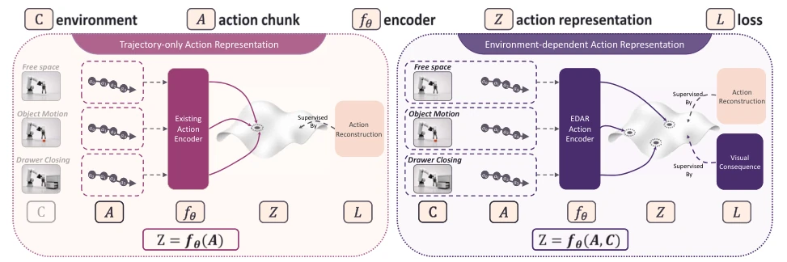
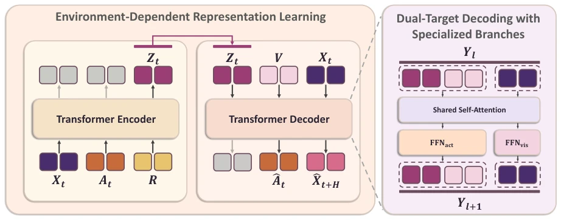
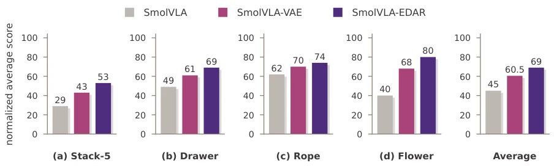
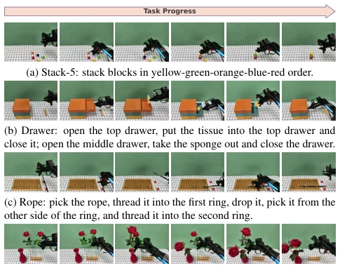
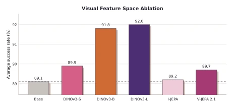

This paper serves as a lesson to the VLA community: the meaning of an action lies not in how many turns of a screw you make, but in whether the screw is actually screwed into the hole. The EDAR team no longer treats actions as isolated trajectory encodings but forcibly embeds "environmental consequences" into the latent space. Although this sounds like adding a lightweight version of a "world model" to VLA, the core lies in not predicting future pixels, but using visual consequences to discipline action semantics. Experiments are very stable on LIBERO and real robots, especially for long-horizon tasks, indicating that this "environment-dependent" approach indeed understands the physical world better than "trajectory-dependent" ones. However, relying on the pre-trained visual encoder means betting the model quality on the backbone; if the pre-trained visual backbone is not strong enough, this approach might lack a solid foundation.
Existing action representation learning mostly focuses on the structure of the trajectory itself, such as smoothness, frequency, or geometric shape [24, 33]. This is like only recording the driver's gas pedal pressure without looking at whether there are traffic lights or cliffs ahead. In manipulation tasks, the same grasp action is "meaningless movement" when empty-handed, "grasping" when touching an object, and "opening a drawer" when aligning a drawer. Existing methods often encode actions as context-independent latent codes, causing policies to struggle to distinguish context-dependent semantics [24, 35]. Furthermore, simply adding visual context as a condition is insufficient because the reconstruction target allows the model to take shortcuts and ignore environmental interaction. Therefore, a representation that can explicitly capture control structure and scene-conditioned visual effects is needed, which is particularly crucial for long-horizon tasks [16, 21].

Figure 1. Conceptual comparison. The same action segment can induce different effects under different scene contexts, and should therefore not be represented as a context-invariant representation. Left: trajectory-only action representation collapses these environment- dependent effects into the same latent action. Right: EDAR conditions the action representation on the current scene and grounds it with visual consequences, separating actions according to their context-dependent effects.
The overall flow of EDAR inputs action blocks $A_t$, current multi-view visual tokens $X_t$, and learnable register tokens $R$ into a Transformer encoder to generate continuous latent action tokens $Z_t$. The core innovation lies in dual constraints: first, action reconstruction loss $L_{act}$ ensures $Z_t$ is decodable back to original control instructions, maintaining executability; second, visual consequence prediction loss $L_{eff}$, requiring $Z_t$ to explain visual changes after action execution under the current scene (future frame features), thereby forcing the latent space to contain environmental interaction semantics. The decoder adopts a shared attention mechanism but branch-specific FFNs, processing action and visual targets separately to avoid optimization conflicts. This design allows environmental changes to directly shape action embeddings, rather than merely serving as external conditions. The downstream policy uses flow-matching in the latent space to predict $Z_t$, then decodes it into control signals. Specifically, $L_{eff}$ uses stop-gradient to fix the visual target space, ensuring the action representation is shaped by pre-trained visual semantics, rather than pixel reconstruction. Additionally, register tokens provide a fixed-size interface, allowing variable-length action blocks to interact with scene context, enhancing the flexibility of the representation.

Figure 2. Overview of Environment-Dependent Action Representation (EDAR). EDAR encodes the action chunk At, current visual tokens Xt, and learnable register tokens R into continuous latent action tokens Zt. The decoder reconstructs the original action chunk ˆAt while predicting future visual tokens ˆ Xt+H, forcing the latent action representation to capture both executable control structure and environment-conditioned visual consequences. A shared-attention decoder with specialized FFNact and FFNvis branches handles the heterogeneous action and visual targets.
On LIBERO, CALVIN, and Meta-World simulation benchmarks, EDAR outperforms trajectory-centric baselines (e.g., SmolVLA, VQ-VLA), with particularly significant improvement on LIBERO-Long (+9.6%). In real-world long-horizon tasks (Stack-5, Drawer, etc.), EDAR achieves an average score of 69.0%, significantly higher than SmolVLA (45.0%) and SmolVLA-VAE (60.5%). Ablation studies confirm that removing environment context or visual consequence prediction leads to performance degradation, and the DINOv3 feature space outperforms JEPA-like targets. This indicates that environment-dependent representations indeed improve policy robustness in complex scenarios, proving the effectiveness of the "action as interaction" design. Especially on Meta-World Hard tasks, EDAR improved by 23.3 percentage points, showing strong adaptability to high-difficulty tasks. Compared to diffusion policies and other continuous control baselines, EDAR demonstrates superior stability in long-horizon tasks.

Figure 3. Real-world long-horizon manipulation results. We report normalized average score on four real-world tasks: Stack-5, Drawer, Rope, and Flower, together with the average score across tasks.

Figure 4. Qualitative results of long-horizon real-world tasks. Key frames for the four long-horizon tasks. Each subfigure shows the progression from start to completion.

Figure 5. Ablation of visual feature spaces for future conse- quence prediction. All variants use the same EDAR architecture and differ only in the visual encoder used to produce future feature targets. We report the average success rate on LIBERO.